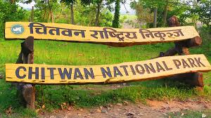
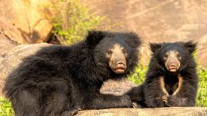
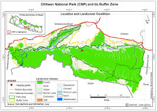
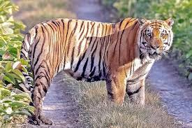
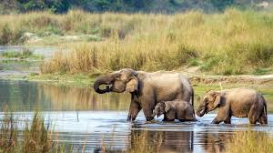
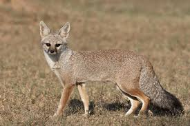
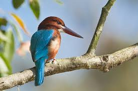

Chitwan National Park is a UNESCO World Heritage Site in Nepal, established in 1973, covering 952.63 sq km in the subtropical lowlands of the Terai region. It is a crucial conservation area for endangered species like the one-horned rhinoceros and the Royal Bengal tiger, featuring diverse ecosystems such as forests, grasslands, and riverine floodplains. The park is a popular tourist destination offering activities like jungle safaris, birdwatching, and canoe trips, and also includes a buffer

Since the end of the 19th century Chitwan used to be a favorite hunting ground for Nepal's ruling class during the cool winter seasons. Until the 1950s, the journey from Kathmandu to Nepal's south was arduous as the area could only be reached by foot and took several weeks. Comfortable camps were set up for the feudal big game hunters and their entourage, where they stayed for a couple of months shooting hundreds of tigers, rhinoceroses, elephant, leopards and sloth bears.[1]In 1950, Chitwan's forest and grasslands extended over more than 2,600 km2 (1,000 sq mi) and were home to about 800 rhinos. When poor farmers from the mid-hills moved to the Chitwan Valley in search of arable land, the area was subsequently opened for settlement, and poaching of wildlife became rampant. In 1957, the country's first conservation law inured to the protection of rhinos and their habitat. Research of Chitwan was conducted by Edward Pritchard Gee during 1959 and 1963.[2]
By the end of the 1960s, 70% of Chitwan's jungles had been cleared, malaria eradicated using DDT, thousands of people had settled there, and only 95 rhinos remained. The dramatic decline of the rhino population and the extent of poaching prompted the government to institute the Gaida Gasti – a rhino reconnaissance patrol of 130 armed men and a network of guard posts all over Chitwan. To prevent the extinction of rhinos, the Chitwan National Park was gazetted in December 1970, with borders delineated the following year and established in 1973, initially encompassing an area of 544 km2 (210sq mi).[3]
When the first protected areas were established in Chitwan, Tharu people were forced to relocate from their traditional lands. They were denied any right to own land and thus forced into a situation of landlessness and poverty. When the national park was designated, Nepalese soldiers destroyed the villages located inside the boundary of the park, burning down houses and trampling fields using elephants. The Tharu people were forced to leave at gunpoint.[5]
In 1977, the park was enlarged to its present area of 952.63 km2 (367.81 sq mi). In 1997, a bufferzone of 766.1 km2 (295.8 sq mi) was added to the north and west of the Narayani-Rapti river system, and between the south-eastern boundary of the park and the international border to India.[6] The word 'Royal' was dropped from the park's name in 2006,[7] at the end of the Nepalese Civil War.[6]

Chitwan National Park has an area of 952.63 km2 (367.81 sq mi) in the Terai region of southern Nepal at an elevation from about 100 m (330 ft) in the river valleys to 815 m (2,674 ft) in the Sivalik Hills; it encompasses parts of the Nawalpur, Chitwan, Makwanpur and Parsa Districts.[6] The Narayani-Rapti river system forms a natural boundary to human settlements in the north and west. Adjacent to the east of Chitwan National Park is Parsa National Park, contiguous in the south is the Indian Tiger Reserve Valmiki National Park. The coherent protected area of 2,075 km2 (801 sq mi) represents the Tiger Conservation Unit (TCU) Chitwan-Parsa-Valmiki, which covers a 3,549 km2 (1,370 sq mi) huge block of alluvial grasslands and subtropical moist deciduous forests.[7]
 The typical vegetation of the Inner Terai is Himalayan subtropical
broadleaf forests with predominantly sal trees covering about 70% of the national park area. The purest
stands of sal occur on well drained lowland ground in the centre. Along the southern face of the Churia
Hills sal is interspersed with chir pine (Pinus roxburghii). On northern slopes sal associates with smaller
flowering tree and shrub species such as beleric (Terminalia bellirica), rosewood (Dalbergia sissoo),
axlewood (Anogeissus latifolia), elephant apple (Dillenia indica), grey downy balsam (Garuga pinnata) and
creepers such as Bauhinia vahlii and Spatholobus parviflorus.
The typical vegetation of the Inner Terai is Himalayan subtropical
broadleaf forests with predominantly sal trees covering about 70% of the national park area. The purest
stands of sal occur on well drained lowland ground in the centre. Along the southern face of the Churia
Hills sal is interspersed with chir pine (Pinus roxburghii). On northern slopes sal associates with smaller
flowering tree and shrub species such as beleric (Terminalia bellirica), rosewood (Dalbergia sissoo),
axlewood (Anogeissus latifolia), elephant apple (Dillenia indica), grey downy balsam (Garuga pinnata) and
creepers such as Bauhinia vahlii and Spatholobus parviflorus.
seasonal bushfires, flooding and erosion evoke an ever-changing mosaic of riverine forest and grasslands along the river banks. On recently deposited alluvium and in lowland areas groups of catechu (Acacia catechu) with rosewood (Dalbergia sissoo) predominate, followed by groups of kapok (Bombax ceiba) with rhino apple trees (Trewia nudiflora), the fruits of which rhinos savour so much.[9] Understorey shrubs of velvety beautyberry (Callicarpa macrophylla), hill glory bower (Clerodendrum sp.) and gooseberry (Phyllanthus emblica) offer shelter and lair to a wide variety of species.
Terai-Duar savanna and grasslands cover about 20% of the park's area. More than 50 species are found here including some of the world's tallest grasses like the elephant grass called Saccharum ravennae, giant cane (Arundo donax), khagra reed (Phragmites karka) and several species of true grasses. Kans grass (Saccharum spontaneum) is one of the first grasses to colonise new sandbanks and to be washed away by the yearly monsoon floods.[10]

Basking mugger crocodile The wide range of vegetation types in the Chitwan National Park is haunt of more than 700 species of wildlife and a not yet fully surveyed number of butterfly, moth and insect species. Apart from king cobra and rock python, 17 other species of snakes, starred tortoise and monitor lizards occur. The Narayani-Rapti river system, their small tributaries and myriads of oxbow lakes is habitat for 113 recorded species of fish and mugger crocodiles. In the early 1950s, about 235 gharials occurred in the Narayani River. The population has dramatically declined to only 38 wild gharials in 2003. Every year gharial eggs are collected along the rivers to be hatched in the breeding center of the Gharial Conservation Project, where animals are reared to an age of 6–9 years. Every year young gharials are reintroduced into the Narayani-Rapti river system, of which sadly only very few survive.[11]

Wild elephant named Dhurbe in Chitwan National Park Indian rhinoceros Tiger in Chitwan National Park Chitwan National Park is home to 68 mammal species. The "king of the jungle" is the Bengal tiger. The alluvial floodplain habitat of the Terai is one of the best tiger habitats anywhere in the world. Since the establishment of Chitwan National Park the initially small population of about 25 individuals increased to 70–110 in 1980. In some years this population has declined due to poaching and floods. In a long-term study carried out from 1995 to 2002 tiger researchers identified a relative abundance of 82 breeding tigers and a density of 6 females per 100 km2 (39 sq mi).[13] Information obtained from camera traps in 2010 and 2011 indicated that tiger density ranged between 4.44 and 6.35 individuals per 100 km2 (39 sq mi). They offset their temporal activity patterns to be much less active during the day when human activity peaked.Indian leopards are most prevalent on the peripheries of the park. They co-exist with tigers, but being socially subordinate are not common in prime tiger habitat.[15] In 1988, a clouded leopard (Neofelis nebulosa) was captured and radio-collared outside the protected area. It was released into the park, but did not stay there.

Chitwan is considered to have the highest population density of sloth bears with an estimated 200 to 250 individuals. Smooth-coated otters inhabit the numerous creeks and rivulets. Bengal foxes, spotted linsangs and honey badgers roam the jungle for prey. Striped hyenas prevail on the southern slopes of the Churia Hills.During a camera trapping survey in 2011, dholes were recorded in the southern and western parts of the park, as well as Indian jackals, fishing cats, jungle cats, leopard cats, crab-eating mongooses, yellow-throated martens, large, small Indian and Asian palm civets.[18] Indian rhinoceros: since 1973 the population has recovered well and increased to 544 animals around the turn of the century. To ensure the survival of the endangered species in case of epidemics animals are translocated annually from Chitwan to the Bardia National Park and the Shuklaphanta National Park since 1986. However, the population has repeatedly been jeopardized by poaching: in 2002 alone, poachers killed 37 individuals in order to saw off and sell their valuable horns.[4] Chitwan has the largest population of Indian rhinoceros in Nepal, estimated at 605 of 645 individuals in total in the country as of 2015.[19] Gaurs spend most of the year in the less accessible Churia Hills in the south of the national park. But when the bush fires ease off in springtime and lush grasses start growing up again, they descend into the grassland and riverine forests to graze and browse. The Chitwan population of the world's largest wild cattle species has increased from 188 to 368 animals in the years 1997 to 2016. Furthermore, 112 animals were counted in the adjacent Parsa Wildlife Reserve. The animals move freely between these parks. Apart from numerous wild boars, there are also herds of chital, sambar, red muntjac and Indian hog deer that inhabits the park. Choushingas and Himalayan serows reside predominantly in the hills. Rhesus macaques, gray langurs, Indian pangolins, Indian crested porcupines, several species of flying squirrels, black-naped hares and endangered hispid hares are also present.[17] Chitwan National Park received 18 wild water buffalo from Koshi Tappu Wildlife Reserve in 2016.[20]

White-throated kingfisher Male paradise flycatcher The park has been designated an Important Bird Area (IBA) by BirdLife International.[21] Every year dedicated bird watchers and conservationists survey bird species occurring all over the country. In 2006 they recorded 543 species in the Chitwan National Park, much more than in any other protected area in Nepal and about two-thirds of Nepal's globally threatened species. Additionally, 20 black-chinned yuhina, a pair of Gould's sunbird, a pair of blossom-headed parakeet and one slaty-breasted rail, an uncommon winter visitor, were sighted in spring 2008.[22] Especially the park's alluvial grasslands are important habitats for the critically endangered Bengal florican, the vulnerable lesser adjutant, grey-crowned prinia, swamp francolin and several species of grass warblers. In 2005 more than 200 slender-billed babblers were sighted in three different grassland types.[23] The near threatened Oriental darter is a resident bon needed] Apart from the resident birds about 160 migrating and vagrant species arrive in Chitwan in autumn from northern latitudes to spend the winter here, among them the greater spotted eagle, eastern imperial eagle and Pallas's fish-eagle. Common sightings include brahminy ducks and goosanders. Large flocks of bar-headed geese just rest for a few days in February on their way north.[citation needed] As soon as the winter visitors have left in spring, the summer visitors arrive from southern latitudes. The calls of cuckoos herald the start of spring. The colourful pitta and several sunbird species are common breeding visitors during monsoon. Among the many flycatcher species the Indian paradise flycatcher with his long undulating tail in flight is a spectacular sightreeder around the many lakes, where egrets, bitterns, storks and kingfishers also abound. The park is one of the few known breeding sites of the globally threatened spotted eagle. Peafowl and jungle fowl scratch their living on the forest floor.As soon as the winter visitors have left in spring, the summer visitors arrive from southern latitudes. The calls of cuckoos herald the start of spring. The colourful pitta and several sunbird species are common breeding visitors during monsoon. Among the many flycatcher species the Indian paradise flycatcher with his long undulating tail in flight is a spectacular sight.
Thank you for visiting my site
Any queries about Chitwan National Park